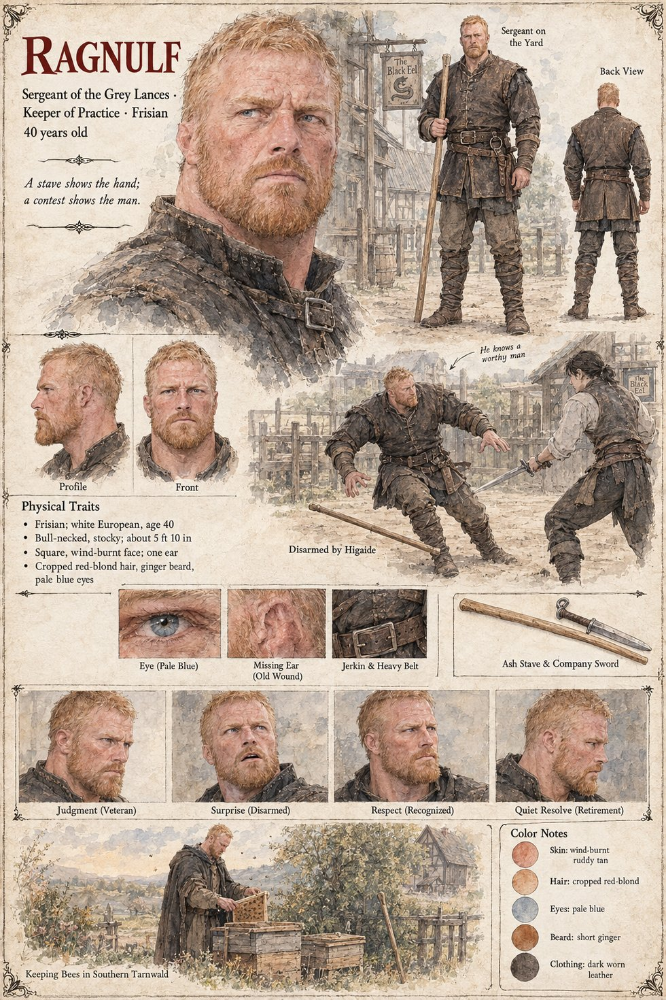

Ragnulf
Sergeant of the Grey Lances · Keeper of Practice · Frisian · 40 years old by his sheet
A bull-necked, stocky Frisian sergeant of forty with cropped red-blond hair, a short ginger beard, pale blue eyes and one ear, the other lost to an old wound, who keeps practice for the Grey Lances with an ash stave and a company sword. His sheet's tagline is A stave shows the hand; a contest shows the man. Its principal scene stands him in a yard before an inn whose sign reads The Black Eel, under the caption Sergeant on the Yard; the next, Disarmed by Higaide, has him facing a dark-haired swordsman with a long blade, the stave on the ground, and the caption beside it reads He knows a worthy man. Tomobe no Higaide is the foreigner of the other pages; the Black Eel is also the name on which Theodard of Lorrenne's sheet gives his age, twenty-seven. The Grey Lances are the company of Hagen Brandt, whose clerk is Wido and in which the One-eyed Lombard is a lance.
The last scene is Keeping Bees in Southern Tarnwald: a man in a worn dark cloak at wooden hives under an orchard, a half-timbered farmhouse behind him. His expression panels run Judgment (Veteran), Surprise (Disarmed), Respect (Recognized) and Quiet Resolve (Retirement). His pull-quote is the sheet's own line. The publication notes give his years as sergeant, nineteen, and have him propose Higaide for sergeant before he retires to a farm in southern Tarnwald to keep bees (Chapter 11). Written from the sheet, from what the other Case 4181 pages already say, and from the character notes in the case's publication-prep file; the manuscript itself was not to hand. His age of 40, his Frisian origin, bull-necked stocky build of about 5 ft 10 in, square wind-burnt face, missing ear, dark worn leather jerkin and heavy belt are the sheet's own.
“A stave shows the hand; a contest shows the man.”